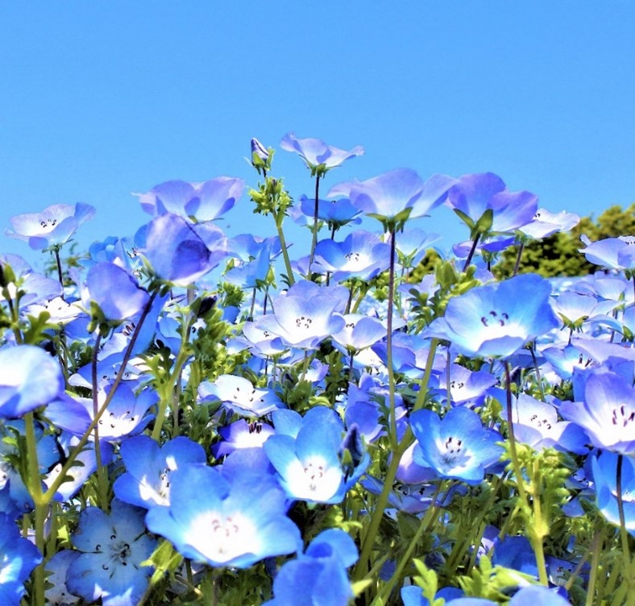
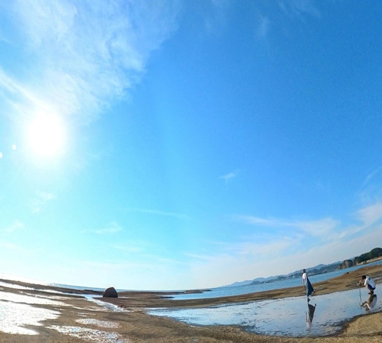
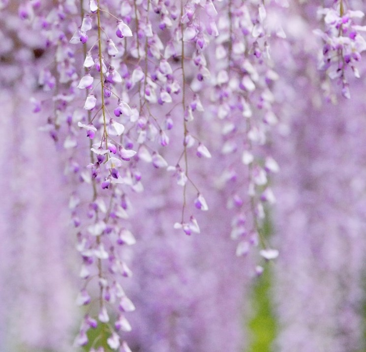
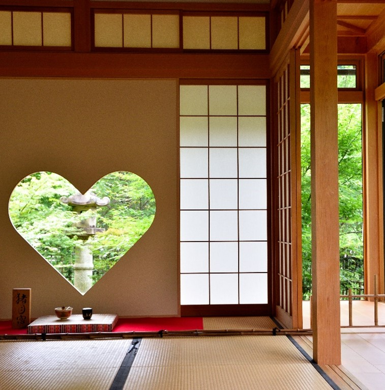
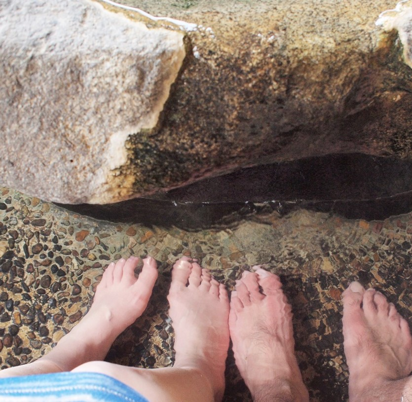
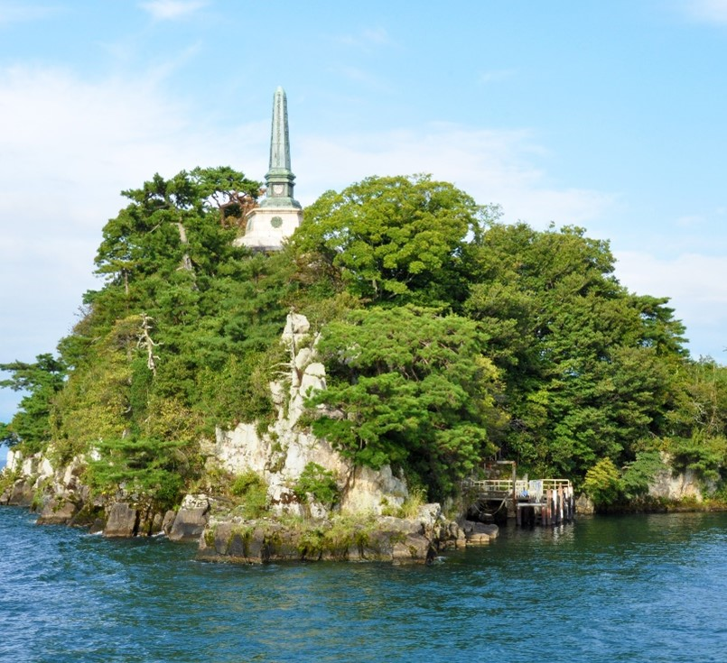

【車でしか行けない】関西のドライブでおすすめの日帰り絶景スポット2022【大阪・京都・神戸】
こんにちは！Men’s Date+ライターあおいです！
みなさん、ゴールデンウィークの予定はもう決まりましたか？
まだ3週間ありますがせっかくの大型連休。早めに計画を立てて万全のプランで満喫したいですよね。
今日は関西ドライブデートの定番スポットからすこしニッチなお出かけデートスポットまで色々紹介しますよ～
ぜひ、参考にしてくださいね！
1.大阪 まいしまシーサイドパーク ネモフィラ祭り
ここ最近で桜に並ぶ春のインスタ映えとして挙げられるネモフィラ。おかげで見かける機会もぐんと増えましたよね。
優しい色合いの花が太陽に向かってひたむきに咲いている姿、
見ているだけですがすがしい気持ちにしてくれます。
初夏のキレイな空と透明感のあるネモフィラの青…。
さらに大阪湾を臨むロケーションなので晴れた日はもう視界いっぱいに青の景色が広がります。ホント、奇跡みたいにきれいなんですよ！
ぜひ、100万株のネモフィラブルーに浸ってみてください。
MAISHIMAモニュメントの前で写真を撮りたい！
近くには海遊館やいちご畑、バーベキュー施設や天保山の大観覧車などとにかく色々あるのでネモフィラを見た後はこちらにもいってみて。
（ユニバーサルスタジオジャパンもあるよ！そっちがメインになりそうですが…）
1か所でいい感じのデートスポットがぎゅっと詰まっている舞洲は日帰りデートにもってこいのおすすめスポット。移動時間も短くて済むのでつきあいたてのふたりでも楽しく過ごせそうです。
まいしまシーサイドパーク
［TEL］06-6147-9966
［住所］〒554-0042 大阪府大阪市此花区北港緑地２丁目１
［営業時間］2022年4月8日～2022年5月8日 平日9:00～17:00 土日9:00～18:30
※5月8日最終日は17時閉園
［定休日］開催期間中無休
［料金］1,200円（その他オプションあり）
［アクセス］電車:JR桜島駅より【北港観光バス】舞洲アクティブバスに乗車 「ホテル・ロッジ舞洲前」下車
車:阪神高速5号湾岸線 湾岸舞洲出口より約5分
国道43号線 梅香交差点を西に進み約15分
南港（咲洲）方面から夢咲トンネルを通過し約5分
※カーナビには、『舞洲陶芸館（TEL.06-6463-7282）』で検索
※此花大橋より、「おおきにアリーナ舞洲」前の交差点を左折し、道なり（時計回り）に進み大阪まいしまシーサイドパーク「ネモフィラ祭り」専用駐車場へ
2.和歌山 田辺天神崎ビーチ 関西のウユニ塩湖！？
絶景といえばボリビアのウユニ塩湖。日本のウユニ塩湖といえば香川県の父母ヶ浜。
そして関西のウユニ塩湖といえば…そう！天神崎ビーチ！
ここなら「遠出めんどくさいよー」というふたりでも手軽に絶景を楽しめちゃいますよ。
干潮時は地面に薄―く海水が残り、透き通った水面が鏡みたいに空を映して上下対称のふしぎな景色を見せてくれます。
「これは【＃リフレクション】でインスタ投稿しまくらな！」といういい感じの写真が撮れるのでぜひ彼女にモデルになってもらいましょう。
ただし、引き潮時で潮位が150～140cm程度、晴れていて風がない日に限定されます。
公式サイトに載っている「天神崎おすすめカレンダー」を張っておくので
ここからベストな日程を選んで訪れてみて！
（GW期間ないね…笑）
天神崎の絶景
ふしぎな絶景を満喫した後は近場の日帰り温泉
（https://www.kanponoyado.japanpost.jp/kiitanabe/daytrip/index.html）
でまったりするのもいいし、すこし足をのばして白浜までいくのもあり。
アドベンチャーワールドの臨場感たっぷりなサファリツアーを楽しんだり、とれとれ市場のバーベキューコーナーで新鮮な海の幸を堪能したり、真っ白な砂がきれいな白良浜（しららはま）で癒されたり…
すてきなドライブデートになりそうですね！
天神崎ビーチ絶景ポイント
［TEL］0739-26-9929（天神崎観光協会）
［住所］〒646-0058 和歌山県田辺市目良１９−１９
［営業時間］free
［定休日］なし
［料金］free
［アクセス］松原JCT（大阪）より阪和自動車道経由で約130km（約1時間50分）南下し、南紀田辺ICへ。
3.京都 鳥羽水環境保全センターの藤棚
京都からはちょっと意外なスポットをご紹介！
京都と言えばまず寺社仏閣を思い浮かべますよね？今回ご紹介するのはなんと環境保全センター。ここの藤棚が毎年見事に花を咲かせるんです。
藤の花はあの有名なアニメでも「鬼が嫌う花」として取り上げられていましたよね。
淡い紫色の花が風に揺れている姿、なんだか幻想みたいでちょっと神秘的。
藤の花にはふしぎなオーラがあるなぁといつも思います。
桜と並んで日本に住んでいるからには見ておきたい花風景ですよ。
きれいな藤棚を見た後はいちご狩りなんてどうでしょう。
程よいアウトドア感があって小腹も満たされるし、仲良しカップルでも
つきあいたてカップルでもいい感じに盛り上がれるのでおすすめです。
何より新鮮ないちご、おいしいしね！
バスや電車が張り巡らされている京都ですが意外と車でしかいけない、車のほうが便利なスポットも結構あるんです。
（ベリーファーム宇治）もその一つ。
こちらのリンクよりネット予約ができます。車で行くときは事前に台数を伝えておかないといけないみたいなので要チェック！
ハート形の猪目窓がかわいい正寿院です。 
インスタ大好き関西女子なら一度は見たことあるんじゃないかというほど
このハート形の猪目窓。
「幸せを呼ぶ窓」なんていわれてるのも納得なほどかわいいフォルムですよね。
ハートの形はもちろん、向こう側に見える新緑もきれい。
正寿院は猪目窓だけではなく、天井もかわいいことで有名。
「花天井画」と言われ花と日本の風景をテーマにした小さい日本画がタイルのように敷き詰められています。こちらもいろどり鮮やかで見ごたえたっぷりなので
ぜひゆっくり楽しんでくださいね。
※ちなみに藤の花で関西なら兵庫県丹波市の白毫寺（びゃくごうじ）もきれいですが近くに他のデートスポット候補が少ないのでほんとにそれだけを目的に行く感じになります。
絶景大好き、写真命カップルにおすすめ。
（すこし離れたところにアスレチック施設があったのでそこに寄ってもいいかも。）
鳥羽水環境保全センター
［TEL］075-671-4161
［住所］〒601-8161 京都府京都市南区上鳥羽塔ノ森梅ノ木１
［営業時間］free
［定休日］なし
［料金］free
［アクセス］
4.兵庫 城崎温泉 まったり外湯巡り
兵庫県からは城崎の温泉をご紹介！
兵庫県の北部に位置し、京都市内や大阪市内からだとなんと車で2時間半弱…。
ちょっと敬遠してしまいそうな距離ですがせっかくのGW!
ここはちょっとがんばって遠出してみましょう。
城崎温泉には7種類の「外湯」と呼ばれる公共浴場があるのでここをめぐるのがおすすめ。
夫婦円満、幸せを招く【鴻の湯】や良縁成就、美人の湯の【御所の湯】などなど
それぞれのお風呂にそれぞれのご利益があります。
円満、幸せ、良縁、美人…うーん、カップルのふたりならいくしかないっしょ！笑
（）
城崎は蟹が有名。ランチは海の駅や温泉街のごはんやさんで蟹を楽しむのもアリ。
彼女が甲殻類いけるのか要チェックですよっ。
写真の通り、いなば鮮魚さんは大きな蟹のオブジェが目印です。
このちょっとなつかしいような「いかにも温泉街」という街並みがいいですよね。
非日常感があって旅行気分を盛り上げてくれます。
移動時間を考えると外湯巡りとランチだけでもたっぷり時間を過ごせそうですが
もう1イベント欲しいふたりには城崎マリンワールド！
や～かわいらしい。かわいいものを見てると顔もほころぶし、自然と話も盛り上がりますよね。 イルカと触れ合えたり、魚にえさをあげられたりと体験オプションもあるので 飽きずに楽しめそう。 温泉街から車で10分弱なのでアクセスも便利です。 GW期間中は予約が必要なので要チェック！ https://marineworld.hiyoriyama.co.jp/
城崎温泉観光協会
［TEL］0796-32-3663
［住所］〒669-6101 兵庫県豊岡市城崎町湯島78
［営業時間］鴻の湯: 7:00～23:00・まんだら湯: 15:00～23:00・御所の湯: 7:00～23:00
一の湯: 7:00～23:00・柳湯: 15:00～23:00・地蔵湯: 7:00～23:00
駅舎温泉さとの湯: 13:00～21:00
［定休日］鴻の湯:火・まんだら湯:水・御所の湯:木
一の湯:水・柳湯:木・地蔵湯:金
駅舎温泉さとの湯:月
［料金］大人700円
［アクセス］中国池田ICから中国自動車道～吉川ＪＣＴ～舞鶴若狭自動車道～春日ＪＣＴ～北近畿豊岡自動車道を経由し八鹿氷ノ山ICで下車。国道9,6,312,3号線を経由して城崎温泉へ。
5.滋賀 びわ湖 多景島クルーズ
みなさん、船旅は好きですかー？
実は私はダイバーなので船旅は大好きです。
船上で感じる風、波の音、見渡す限り真っ青な景色！すべてが最高！
でも船旅に付きまとうのが船酔い問題。苦手意識がある人も多いんじゃないでしょうか。
でもびわ湖なら大丈夫！湖は海と違って波が比較的少ないので安心です。
（※片道約20分の湖クルーズなので心配することはないと思いますが
かなり酔いやすいのでどうしても不安、念には念を、という方は事前に酔い止めを飲んでおいてもいいかも！）
目的地の多景島ですが、島全体が見塔寺というお寺の境内になっています。
1日1便のみの運航で15:20到着～15:50出航ですが島自体は小さい無人島なので30分の滞在時間で十分にのんびり散策できます。
帰りは特にくれぐれも乗り遅れないように！
（ https://www.ohmitetudo.co.jp/marine/time-table_hikone-takeshima-hikone/index.html）
気持ち良い湖クルーズ以外にも自然豊かでのびのび過ごせる施設が多いのが滋賀県のいいところ。
もう一つおすすめなのがローザンベリー多和田。
さまざまな花が咲き乱れるガーデンが魅力でとても癒されるんです。
カフェやバーベキューなど自然にふれながらゆっくり過ごすことができますよ。
クルーズと共にのんびりした滋賀Dayを過ごせそうです。
今年のGWは好天候の予感。ぜひ大自然に囲まれてのびのび過ごしてみては？
オーミマリン彦根港営業所（多景島クルーズ出航場所）
［TEL］0749-22-0619
［住所］〒522-0002 滋賀県彦根市松原町３７５５
［営業時間］9:00~17:00
［定休日］不定休
［料金］1500円（航路によって値段が変わります。多景島は1500円（上陸する場合））
［アクセス］名神高速道路彦根ＩＣから約４km（約10分）
4.おわりに
さて今回は関西の車でしか行けないゴールデンウィークにおすすめのドライブスポットをご紹介しました。
全部ギリギリ日帰りで行ける距離感となっております…笑。
付き合って長いラブラブなふたりはもちろんのこと、つきあいたてのふたりでも日帰りデートなら安心！運転している間も好きな曲を流したり、お互いのことを話したり…楽しい時間になること間違いなし！
あー恋人ほしくなってきちゃった！！！
そんなわけでみなさんも最高なゴールデンウィークデートを楽しんでねー
※「城崎マリンワールド」は日和山観光株式会社の登録商標です。
※「ローザンベリー多和田」は大沢ホールディングス株式会社の登録商標です。